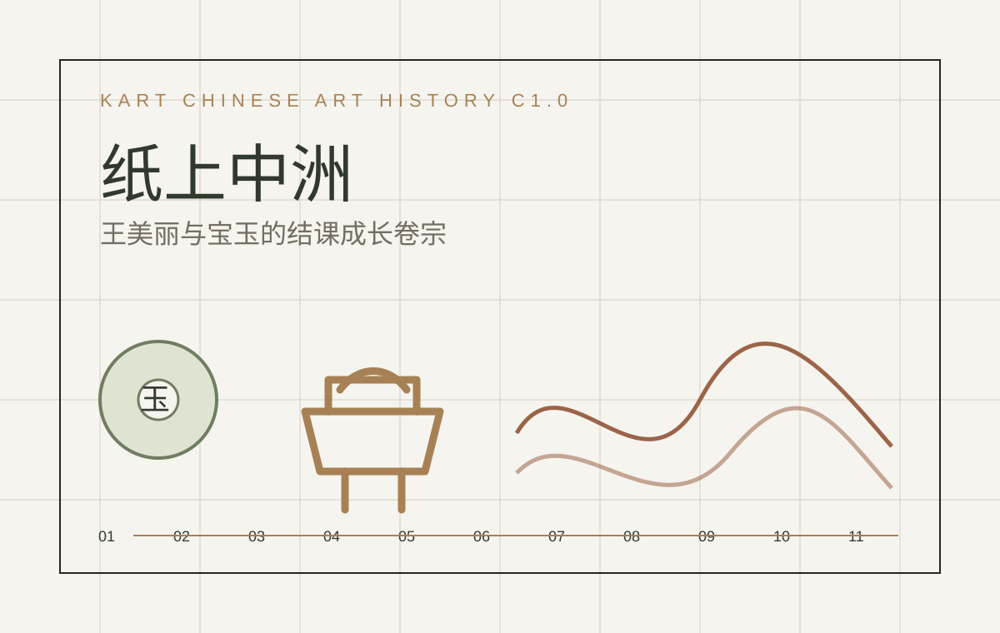
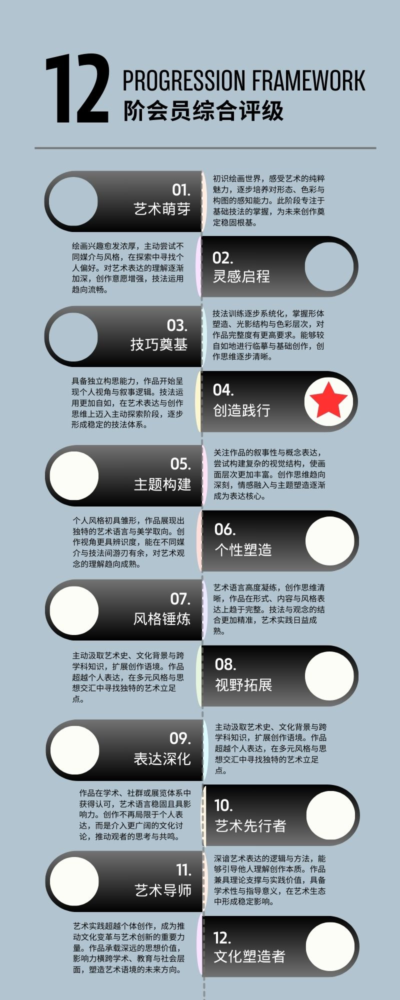
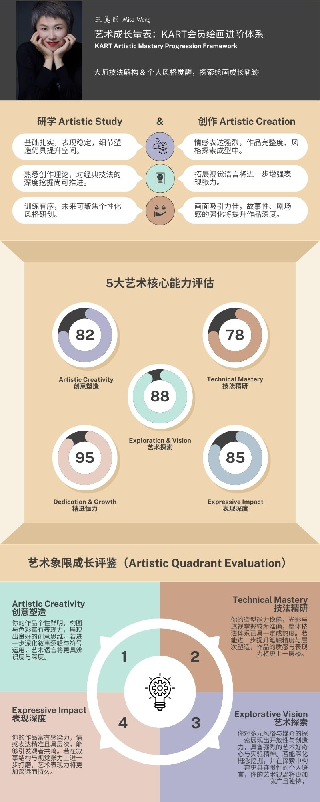
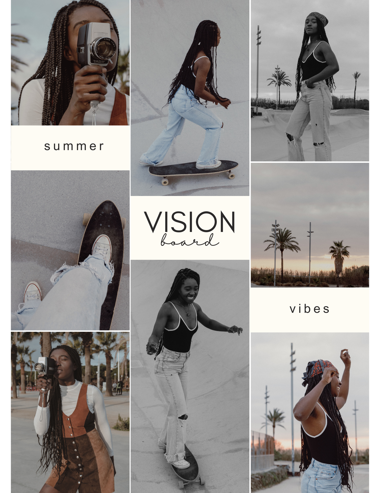

感受如何变成判断
已有导师课旧材料：艺术量表、综合评级、作品集 PDF 与视觉板。中国艺术史课中，她的线索集中在“美学时钟”“价格 vs 价值”“艺术支撑文明连续体”。
中国艺术史课程结束后，王美丽与宝玉的成长线被整理成两份卷宗：一条从感受进入价值，一条从器物进入秩序。

本页不把学生写成抽象人物，而是把文件里实际能确认的材料和课程中形成的判断分层摆清楚。
已有导师课旧材料：艺术量表、综合评级、作品集 PDF 与视觉板。中国艺术史课中，她的线索集中在“美学时钟”“价格 vs 价值”“艺术支撑文明连续体”。
目前未见独立作品集或量表材料。课程文件中，他的线索集中在“宝玉系列”“全形拓+联想”“没有危机感的治理术”“天人合一的长期审美结构”。
当前可见记录集中在 C1.0-2 至 C1.0-4，第5课有承接说明，但缺少具体发言文本。
美丽问价值如何被感受；宝玉问秩序如何被器物保存。
三份 Markdown 保留更完整的证据表、成长叙事、AOEM 更新和待补清单。
新版本不覆盖 V3.0。它把王美丽和宝玉贯穿到底，用 11 道题回看整套中国艺术史课程。
十一件课程碎片：玉礼、青铜、楚魂、秦汉之桥、佛身与自我、唐风、宋心、元路、明雅、清新。进入 V4.0 终局小测
这些图像来自 Museum 中已有的王美丽导师课资料，用作旧卷宗事实支撑；中国艺术史课洞见另按课程文件记录。



这部分是卷宗最重要的刹车装置：哪些能说，哪些不能越过。
旧导师课材料较完整，但艺术史课后逐课发言目前只看到 C1.0-2、C1.0-3、C1.0-4 和 C1.0-5 待补。不能把第6至第11课的个人反应写成已发生事实。
当前未在 Museum 中搜到独立个人资料、作品集、量表或图像附件。他适合先放在“中国艺术史 C1.0 项目记录”下，而不是贸然建完整会员页。